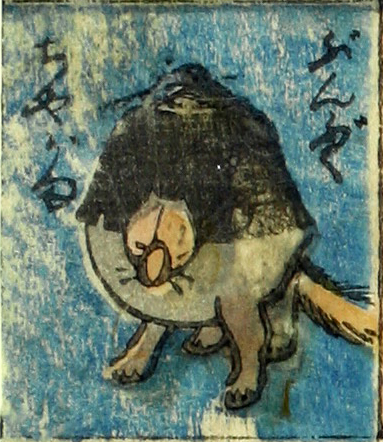

文福茶釜；ブンブクチャガマ，狸；タヌキ

分福茶釜。茶釜に狸の頭、脚、尻尾がついている。
著作者：芳盛／出典：親書誌：U426_nichibunken_0073：しん板化物尽し；シンパンバケモノヅクシ／日付：2006／資源識別子：U426_nichibunken_0073_0043_0000
Copyright (c)2010- International Research Center for Japanese Studies, Kyoto, Japan. All rights reserved.